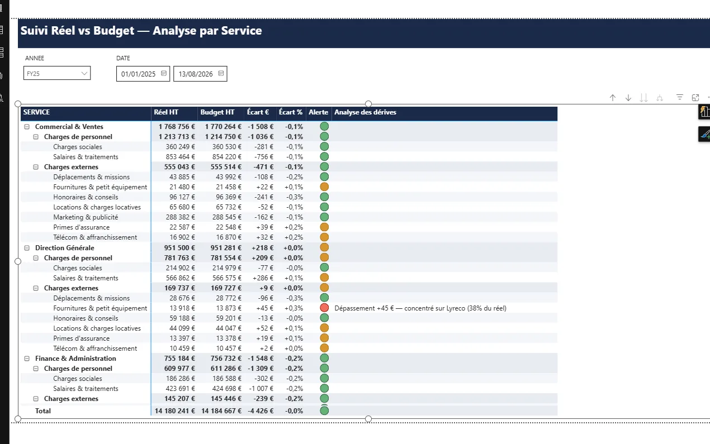

Autres projets
Voir les 10 projets →
Contrôle de gestion · Power BI et IA
Power BI × Claude
Suivre le réel face au budget, service par service, avec un commentaire automatique des dérives : un rapport Power BI construit par une IA agentique.

Analyse financière · Excel
Excel - SIG, CAF et ratios
Lire la santé financière d'une entreprise sur trois exercices : soldes intermédiaires de gestion, CAF et ratios calculés automatiquement.

Suivi budgétaire · Power BI
Power BI - Suivi bancaire
Comparer les dépenses réelles au budget, catégorie par catégorie, et voir où part l'argent chaque mois.
Recherche et démos
Mémoire M2 - IA générative en audit
Comment les auditeurs perçoivent et utilisent l'IA générative : enquête auprès de 67 auditeurs, tests statistiques et résultats sourcés.
Lire le mémoire →Explorateur open data
Vérifier que l'open data français est exploitable : recherche guidée et visualisations sur les jeux de données de data.gouv.fr.
Découvrir l'outil →